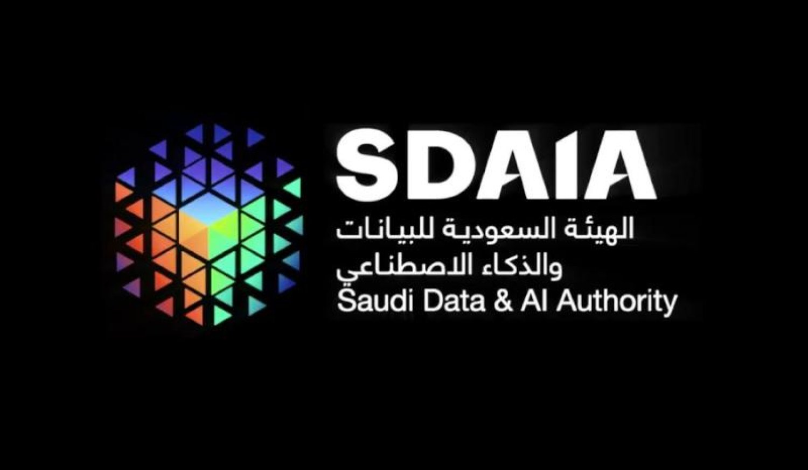

artificial intelligence

The Saudi Data and Artificial Intelligence Authority regulates the use of artificial intelligence in the Kingdom of Saudi Arabia through a set of regulations and policies.
These restrictions include the following:
- The use of artificial intelligence in lethal weapons that can fire or cause injuries without human intervention is prohibited.
- The use of artificial intelligence in any form of discrimination is prohibited, including discrimination based on race, sex, religion, or any other factor.
- The use of artificial intelligence in any form of violation of privacy is prohibited, including the collection of personal data without the consent of the owner or its use for illegal purposes.
- The use of artificial intelligence in spreading misinformation or information that could harm society is prohibited.
These restrictions also include a set of standards that developers and service providers must comply with when using artificial intelligence, such as:
- Artificial intelligence systems must be safe and reliable, and be protected from cyber attacks..
- finally,The Saudi government is committed to using artificial intelligence in a way that benefits society and protects its citizens. The restrictions outlined above are designed to ensure that artificial intelligence is used in a safe, ethical, and responsible manner.